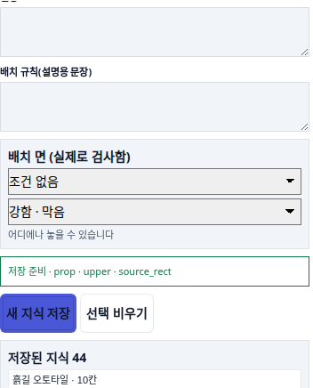
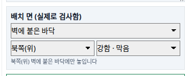
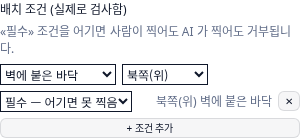
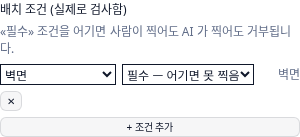
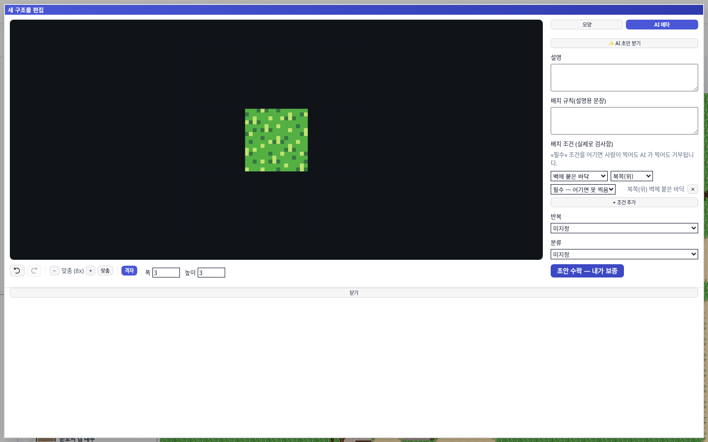
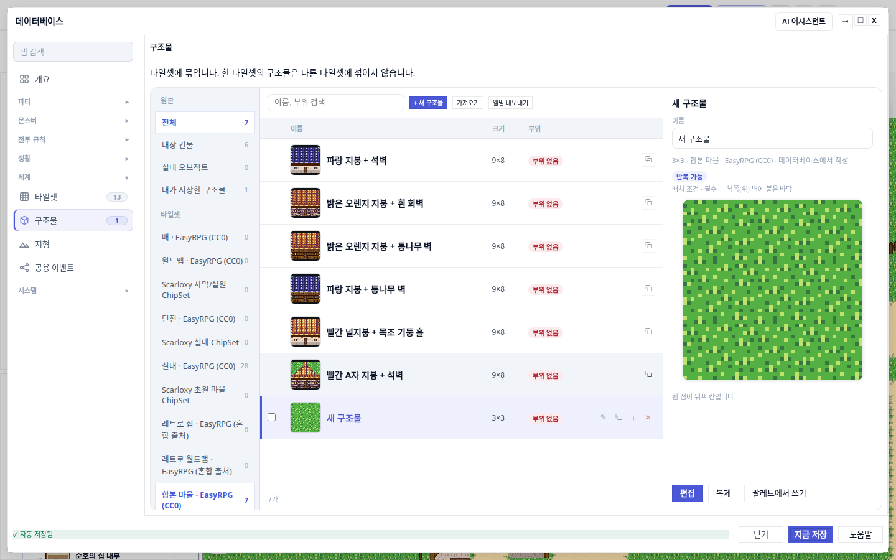
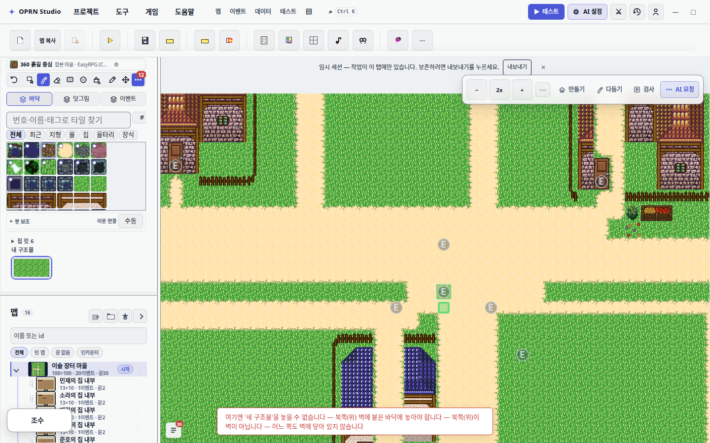
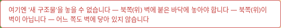
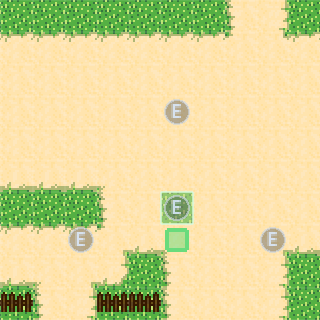
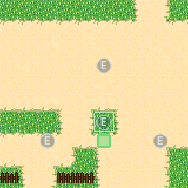

배치 조건 — 설명용 산문에서 실제 검사로
2026-08-30 · 크로미움 실측 · 스크린샷 10장은 모두 이번 브랜치 빌드에서 직접 찍은 것
1 문제 — 규칙은 있었지만 아무도 읽지 않았다
배치 규칙 칸은 전부터 있었다. 다만 자유 문장이었다.
기존 칸은 "배치 규칙(설명용 문장)" — 사람이 아무 말이나 적는 textarea 다. 여기에 "벽에 붙여 놓아야 함"이라고 써 두면 사람이 읽고 지킬 수는 있지만, 붓이 그 문장을 이해하지 못한다. AI 도 문장을 프롬프트에 실어 보낼 뿐이라 어길 때 막히지 않는다. 조건을 어긴 배치는 맵 감사에 잡히지도 않았다 — 검사할 값이 없으니 검사기를 쓸 수가 없다.

조건 없음 이고 밑줄에 결과를 문장으로 되돌려 준다 — "어디에나 놓을 수 있습니다".2 저장되는 값 — 여섯 가지 자리 × 방향 × 강도
| 자리(zone) | 뜻 | 검사 방법 |
|---|---|---|
anyFloor | 아무 바닥 | 발자리가 벽이 아니면 통과 |
clearArea | 빈 땅(자리 전체) | 발자리 전체가 비어 있어야 함 |
openFloor | 벽에서 떨어진 바닥 | 네 방향 어디에도 벽이 닿지 않아야 함 |
againstWall | 벽에 붙은 바닥 | 지정 방향(또는 아무 방향)이 벽이어야 함 |
corner | 구석 바닥 | 세로·가로 양쪽이 모두 벽이어야 함 |
wallFace | 벽면 | 발자리 전체가 벽 타일이어야 함(벽걸이용) |

벽에 붙은 바닥 · 북쪽(위) · 강함 · 막음. 인스펙터는 352px 열이라 강도 라벨을 짧은 쪽으로 쓴다 — 편집기 다이얼로그의 "필수 — 어기면 못 찍음"과 같은 값이다. 밑줄이 저장될 조건을 문장으로 확인해 준다 — "북쪽(위) 벽에 붙은 바닥에만 놓입니다".강도는 두 단계다. 필수(hard) 는 어기면 못 찍는다. 권장(soft) 는 경고만 하고 찍힌다. 방향은 againstWall 에서만 뜻이 있어서, 다른 자리를 고르면 방향 칸이 사라진다 — 안 먹는 칸을 비활성으로 남겨 두면 "왜 안 되지"를 유발한다.

벽에 붙은 바닥 + 북쪽(위) + 필수 — 어기면 못 찍음. 오른쪽에 저장될 문장("북쪽(위) 벽에 붙은 바닥")을 즉시 되돌려 준다. 머리글의 «필수» 조건을 어기면 사람이 찍어도 AI 가 찍어도 거부됩니다 한 줄이 강도의 뜻을 설명한다.
3 어디에 붙였나 — 두 입구, 한 검사기
타일 그룹(타일셋 지식)과 구조물 킷은 저장 위치가 다르다. 검사 코드는 하나로 모았다.
새 파일 src/project/placementSurface.ts 가 유일한 판정자다. 맵 위 발자리를 받아 {ok, reason} 을 돌려주고, 실패 이유는 사람 말로 만든다. 저장 형태만 입구별로 다르다.
타일 그룹 → 그룹의 clusterRule 하나로 (kind: "surface")
{"group":"화덕 오븐","rule":{"id":"r_surface_tile_group_1","kind":"surface",
"params":{"zone":"againstWall","facing":"north"},"strength":"hard"}}
구조물 킷 → kit.ai.placement 배열로 (조건 여러 줄 가능)
{"id":"kit_72505873…","name":"새 구조물",
"placement":[{"id":"pc_fd1ea23f…","strength":"hard","zone":"againstWall","facing":"north"}]}

+ 조건 추가 로 여러 줄을 쌓을 수 있고, 저장은 아래 초안 수락 — 내가 보증 이 맡는다.
4 실제로 막히는가 — 붓으로 확인
「북쪽(위) 벽에 붙은 바닥 · 필수」 조건을 단 3×3 킷을 팔레트에 물리고, 벽이 없는 흙길 가운데를 클릭했다.


여기엔 '새 구조물'을 놓을 수 없습니다 — 북쪽(위) 벽에 붙은 바닥에 놓아야 합니다 — 북쪽(위)이 벽이 아닙니다 — 어느 쪽도 벽에 닿아 있지 않습니다. 규칙 이름만 되뇌지 않고 지금 이 자리가 왜 안 되는지까지 붙인다. 실측 결과 바뀐 칸은 0칸 — 문구만 뜨고 실제로 안 찍힌 게 맞다.권장(soft)으로 낮추면 찍힌다
같은 자리, 같은 클릭에서 강도만 권장 으로 바꿨다. 결과는 8칸 변경(49,50 50,50 51,50 49,51 50,51 51,51 50,52 51,52), 하층 타일이 424 → 365 / 454 로 바뀌었다. 토스트는 이유를 그대로 알리되(북쪽(위) 벽에 붙은 바닥에 놓아야 합니다 — 북쪽(위)이 벽이 아닙니다 — 어느 쪽도 벽에 닿아 있지 않습니다) 붓을 막지 않는다.


424 → 365/454.토스트를 찍는 데 애를 먹었다 — 기록해 둔다
전체 화면 스크린샷이 이 앱에서 1~3초가 걸린다(1440×900 + Phaser 캔버스). error 토스트 수명은 4초라, 전체를 먼저 찍고 잘라 찍으면 이미 꺼져 있다. DOM 을 재 보면 opacity: 0 인데 텍스트는 남아 있어(만료 후에도 최신 토스트는 DOM 에 남기는 계약) "보이는데 안 찍힌다"로 오해하기 쉽다. 확실한 방법은 요소 자체를 찍는 것(locator.screenshot())이고, 그렇게 얻은 그림이 위의 거부 메시지다.
5 AI 쪽도 같은 문을 지난다
AI 가 구조물을 찍는 도구(placementTools · structureKitTools)와 점수 계산(placementScoring)이 같은 검사기를 부른다. 필수 조건을 어긴 자리는 도구 호출이 거부되고, 조건 문장은 contextBuilder 를 통해 프롬프트에도 실린다 — 먼저 알려 주고, 그래도 어기면 막는 구조다. 맵 감사(clusterRuleValidators)는 이미 놓인 것들을 훑어 조건 위반을 error 로 보고한다. 벽을 지워 버려 되볼 수 없는 자리는 «판정 불가» 로 건너뛴다 — 없는 근거로 위반을 만들지 않는다.
6 검사 결과
| 항목 | 결과 |
|---|---|
test/placementSurface.test.ts — 자리·방향·강도 판정 | 16/16 통과 |
test/clusterRuleSurface.test.ts — 맵 감사 · 규칙 저장 · 지식 병합 | 10/10 통과 |
tsc --noEmit -p tsconfig.app.json (게이트가 쓰는 앱 프로젝트) | 오류 0 |
| CSS 예산 게이트 | 회귀 0 · 개선 1 (undefinedVars 63 → 61) |
| 붓 거부(필수) 실측 | 0칸 변경 |
| 붓 경고(권장) 실측 | 8칸 변경 + 경고 |
실측 중에 고친 것
- 드롭다운 글자가 잘렸다 — 세 칸을 한 줄에 두니 "벽에 붙은 바닥"이 "벽에 붙은 바다" 로 읽혔다. 자리 칸을 한 줄 전체로 올리고 방향·강도를 아래 줄로 내렸다.
- 강도 라벨이 넘쳤다 — 인스펙터 352px 열에서 "필수 — 어기면 못 찍음"이 잘려, 인스펙터에서는
강함 · 막음으로 줄였다(편집기 다이얼로그는 넓어서 긴 라벨 유지). - 지우기 ✕ 가 한 줄을 통째로 먹었다 — 방향 칸이 없는 «벽면» 조건에서 줄이 접히면 다이얼로그의
.btn늘어남 규칙을 물려받았다.flex: 0 0 auto로 고정. - 인스펙터에 조건이 안 보였다 — 4장 캡션의 그 줄을 추가.
남은 한계
- 검사는 벽 여부를 기준으로 한다. 물·절벽 같은 다른 지형은 벽으로 보지 않으므로 "물가에만" 같은 조건은 아직 표현할 수 없다.
- 조건은 발자리(bounding box) 기준이다. 부위별로 다른 조건(굴뚝은 지붕 위, 문은 벽면)은 표현하지 못한다.
- 맵 감사는 세로쌍 구조를 되볼 수 있을 때만 판정한다 — 벽을 지운 뒤에는 위반을 찾아내지 못하고 조용히 건너뛴다.